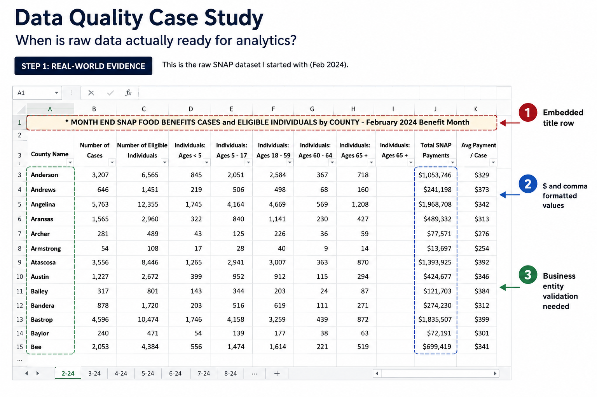
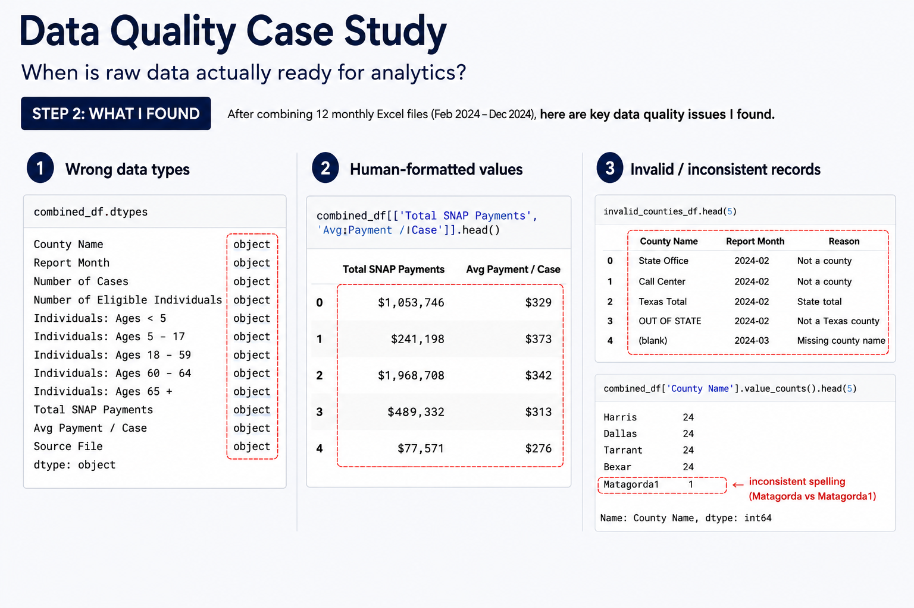
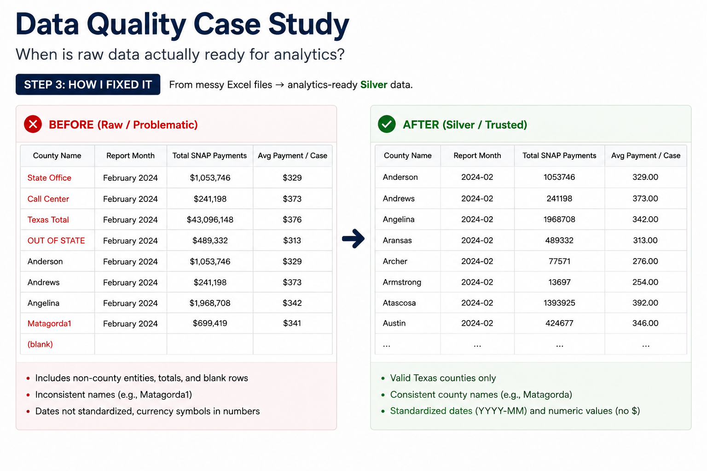
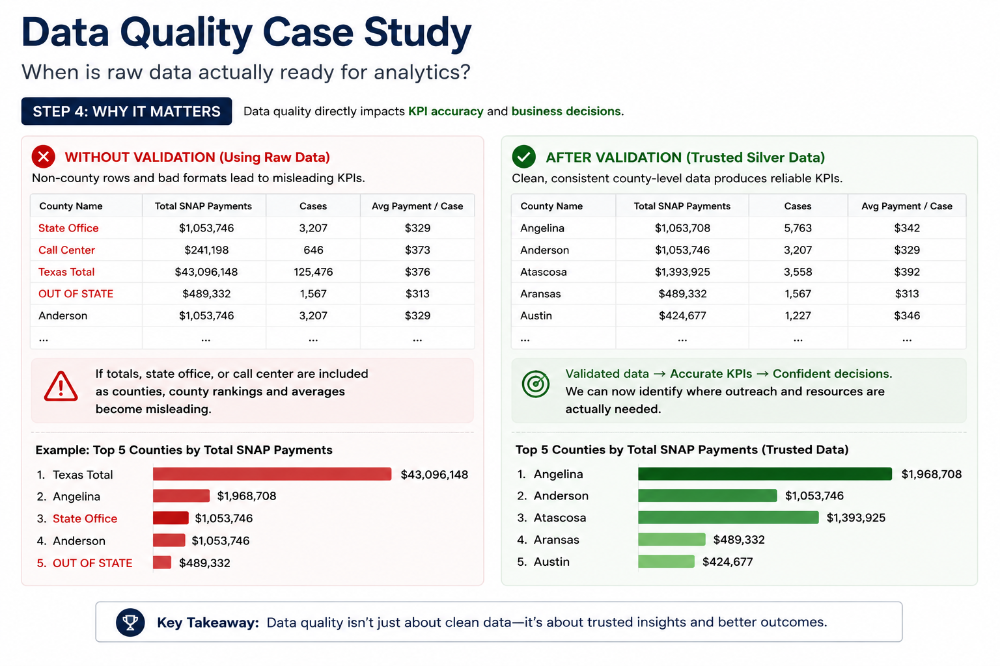

A real-world data quality case from my SNAP Analytics Platform: turning public Excel reports into trusted, analysis-ready data.
While building my SNAP Analytics Platform, I started with monthly public SNAP reports published as Excel files.
At first glance, the data looked structured: county names were in rows, metrics were in columns, and the files opened cleanly in Excel.
But looking like a table and being analytics-ready are two very different things.

Before using the data for KPI calculations or reporting, I profiled the raw files and found several issues that could silently affect downstream analysis.
Non-county entities appeared alongside actual counties.
Repeated headers, notes, and structural rows had to be identified.
Numeric and currency fields were not consistently analysis-ready.
County values required validation and standardization.

Instead of jumping directly into cleaning, I treated data quality as a sequence of decisions.
Understand the structure, values, missingness, and anomalies before changing the data.
Remove rows and elements that do not represent valid analytical records.
Make formats consistent and convert fields into the data types required for reliable calculations.
Apply business rules to confirm that the resulting dataset is actually usable for analytics.

Data quality is not only about making a dataset look cleaner. The real question is whether the data can safely support the business metrics built on top of it.
If invalid entities, inconsistent formats, or incorrect data types make it downstream, the issue is no longer just a cleaning problem. It becomes a KPI and decision-making problem.

The most important lesson was that data quality is not simply a cleaning step between ingestion and reporting.
It is the process of deciding what the data means, what should be trusted, and what conditions must be true before that data can support a business decision.